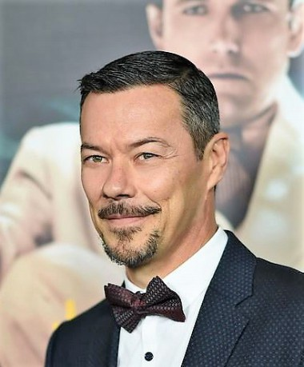

#12110 Rettet Flora
Alternativ: Saving Flora (Englischer Titel)

 IMDB-Wertung: 5.6 / 10
IMDB-Wertung: 5.6 / 10  Metascore: 0
Metascore: 0 
Elefantendame Flora hat viele Jahre lang im Zirkus kleine und große Zuschauer mit ihren Kunststückchen begeistert. Doch mittlerweile ist sie zu alt, um weiterhin auftreten zu können und soll deshalb eingeschläfert werden. Dawn, die 14-jährige Tochter des Zirkusdirektors, möchte das um jeden Preis verhindern und flieht eines Nachts mit Flora. Zusammen wollen sie Schutz in einem entfernten Elefantenreservat suchen, in dem Flora in Sicherheit ihre alten Tage genießen kann. 200 Kilometer müssen sich die beiden dafür durch Wälder und reißende Flüsse kämpfen und außerdem zwei skrupellosen Elefantenjägern entkommen.
Jahr: 2018
Dauer: 95 Minuten
FSK: 6
Land: USA Studio: Culture DistributorTonspuren: DTS - ,
Untertitel:
Auflösung: 1080p (1920x1080) Größe: 6225 MB
Genre: Drama, Abenteuer, Familie
Regisseur: Mark Drury Taylor
Drehbuch: David Moss, Mark Drury Taylor
Soundtrack: Antonio Fernández, Robert Rettberg
Darsteller:
- Jenna Ortega als Dawn
- Martin Martinez als Sebastian
 David Arquette als Henry
David Arquette als Henry Leonor Varela als Isabella
Leonor Varela als Isabella- Galen Howard als Bob
 Tom Arnold als Runyon
Tom Arnold als Runyon Rhea Perlman als Gabriella
Rhea Perlman als Gabriella- Guilford Adams als Art
- Carlos Ragas als Barnaby
- Mars Crain als Strong Man / Milos
 Michael Patrick McGill als Dad
Michael Patrick McGill als Dad- T.K. Weaver als Little Boy
 Frank Gallegos als Matias
Frank Gallegos als Matias- Eddie Alfano als Javier Suarez
- Cindy Chu als Kim
- Christiano Cochrane als Searcher
- Dave Cobert als Ranger
- Scarlett Roselynn als Ellen
-  Massi Furlan als Fernando
- Monica Mauro als Darlene
- Virginia Montero als Clerk
- Terry Moore als Sylvia
- Chris Stathis als Drunk
- Forest Baker als Circus Audience Member (uncredited)
 Kevyn Bashore als Circus Guest (uncredited)
Kevyn Bashore als Circus Guest (uncredited)- Heather Harrison als Acrobat (uncredited)
- Tim Lowry als 1920's Ringmaster (uncredited)
- Melvin Ray Waters als Officer
- Angel Griffin als Firebreather
- Aaron Lyon als Stiltwalker
- Eoin Thomas Sharkey als Clown #1
- Oleg Flow als Clown #2
- Jordan Degeling als Juggler (uncredited)
- Tai als Flora (uncredited)
- Shantiel Alexis Vazquez als Flora Supporter (uncredited)
Datei: X:\2018(N-Z)\Rettet Flora (2018, FSK6, 1920x1080).mkv seit 05.12.2019
Festplatte: HD 2018(G-Z)-2019(A-Z)
 Es gibt insgesamt 172 Filme in der Gruppe '2018(N-Z)'
Es gibt insgesamt 172 Filme in der Gruppe '2018(N-Z)'